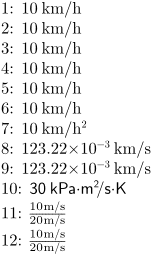
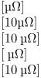
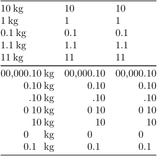
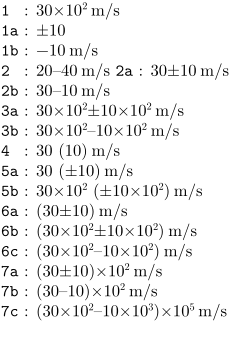
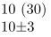

Contents
Summary
The instances of \unit are used for typesetting physical units.
Instances
| \unit |
Settings instance
Description
The
\unit
command typesets physical units, with or without a number preceding them. Units and their prefixes may be spelled out or abbreviated, with or without spaces or initial capitals; this will be converted to the correct abbreviated form and typeset. Any numbers that are encountered after units are assumed to be powers; one may also write e.g.
squared meter
. Multiplication is implicit; division may be written as
per
. The font automatically adapts to the environment.
The number before the digits is interpreted as just that, a number. There are a few special characters you can put in to format it; most importantly, e123 is interpreted as times 10^123.
. |
a decimal mark (default) or a number separator | : |
an invisible decimal separator space |
, |
a number separator (default) or a decimal mark | ; |
an invisible number separator space |
@ or _ or ~ |
a number-sized space | ||
= |
an inivisible space for zero padding | ||
+ or - |
a sign | / |
an invisible sign space |
++ or -- |
a high sign | // |
an invisible high sign space |
Examples
Example 1
Various ways to write a unit:
-
\startlines 1: 10 \unit{km/h} 2: 10 \unit{KiloMeter/Hour} 3: 10 \unit{kilometer/hour} 4: 10 \unit{kilometer per hour} 5: 10 \unit{km / h} 6: 10 \unit{ km / h } 7: 10 \unit{km/h2} 8: \unit{123.22^-3 km/s} 9: \unit{123.22e-3 km/s} 10: {\ss 30 \unit{kilo pascal square meter / second kelvin}} 11: $\frac{10 \unit{m/s}}{20 \unit{m/s}} $ 12: $\frac{\unit{10 m/s}}{\unit{20 m/s}} $ \stoplines
- 
Example 2
Units automatically have a space put in front of them.
-
[\unit{micro ohm}]\par % space before unit [10\unit {micro ohm}]\par % space before unit [10 \unit{micro ohm}]\par % space before unit [ \unit {micro ohm}]\par % space before unit [\unit{10 micro ohm}]\par % space before unit
- 
Example 3
There are various ways put separators in numbers:
-
\starttabulate[|l|l|l|] \HL \NC \unit{10 kilo gram} \NC \digits{10} \NC \unit{10} \NC \NR \NC \unit{1 kilogram} \NC \digits{1} \NC \unit{1} \NC \NR \NC \unit{0.1 kilogram} \NC \digits{0.1} \NC \unit{0.1} \NC \NR \NC \unit{1.1 kilogram} \NC \digits{1.1} \NC \unit{1.1} \NC \NR \NC \unit{11 kilogram} \NC \digits{11} \NC \unit{11} \NC \NR \HL \NC \unit{00,000.10 kilogram} \NC \digits{00,000.10} \NC \unit{00,000.10} \NC \NR \NC \unit{@@,@@0.10 kilogram} \NC \digits{@@,@@0.10} \NC \unit{@@,@@0.10} \NC \NR \NC \unit{__,___.10 kilogram} \NC \digits{__,___.10} \NC \unit{__,___.10} \NC \NR \NC \unit{__,__0:10 kilogram} \NC \digits{__,__0:10} \NC \unit{__,__0:10} \NC \NR \NC \unit{__,___:10 kilogram} \NC \digits{__,___:10} \NC \unit{__,___:10} \NC \NR \NC \unit{__,__0:== kilogram} \NC \digits{__,__0:==} \NC \unit{__,__0:==} \NC \NR \NC \unit{__,__0.1= kilogram} \NC \digits{__,__0.1=} \NC \unit{__,__0.1=} \NC \NR \HL \stoptabulate
- 
Example 4
It is possible to directly input ranges or measures of uncertainty in \unit:
-
\startlines \type{1 } : \unit {30^2 meter per second} \type{1a} : \unit {±10} \type{1b} : \unit {-10 meter per second} \type{2 } : \unit {20 – 40 meter per second} % long dash! \type{2a} : \unit {30 pm 10 meter per second} \type{2b} : \unit {30 to 10 meter per second} \type{3a} : \unit {30^2 pm 10^2 meter per second} \type{3b} : \unit {30^2 to 10^2 meter per second} \type{4 } : \unit {30 (10) meter per second} \type{5a} : \unit {30 (pm 10) meter per second} \type{5b} : \unit {30^2 (pm 10^2) meter per second} \type{6a} : \unit {(30 pm 10) meter per second} \type{6b} : \unit {(30^2 pm 10^2) meter per second} \type{6c} : \unit {(30^2 to 10^2) meter per second} \type{7a} : \unit {(30 pm 10)^2 meter per second} \type{7b} : \unit {(30 to 10)e2 meter per second} \type{7c} : \unit {(30e2 to 10e3)^5 meter per second} \stoplines
- 
The above doesn’t work when no unit is specified (and neither in \digits). In that case
-
\registerunit[unitless=unitless] \setupunittext[unitless=\strut] \unit{10 (30) unitless}\par \unit{10 ± 3 unitless}
- 
Notes
The last example ('unitless') does not work with 20200630 LMTX.
- By Hraban on 2024-08-24T13:59:35+0200 :
- The note above is obsolete.